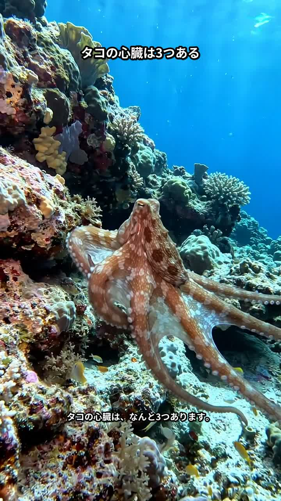

コードが書けない私が、AIと一緒にゲーム7本と動画45本を作った記録（収益0円）
はじめに
先に結論を書きます。
私はコードが書けません。プログラミングの学習は挫折しました。
それでもこの秋、AIと一緒にゲームを7本公開し、ショート動画を45本出しました。収益は0円です。
これは成功談ではありません。作ったものと、出た数字と、かかったお金を、全部そのまま書く途中経過の記録です。
コードが書けない私のこと
小さいころからゲームが好きで、「自分でも作れたらいいな」とずっと思っていました。プログラミングの勉強もしてみました。でも続きませんでした。挫折です。今もコードは書けません。
本業はSESで、人が作ったシステムの保守をしています。毎日、壊れないように見守って、壊れたら直す仕事です。作る側ではなく、守る側の人間でした。
変わったのは、AIエージェントを触ってみたときです。「これなら、ゲームを作れるんじゃないか」と思いました。
最初に作ったのは、子ども向けの風船ゲームです。下から上がってくる風船をタップするだけのものを、自分の子どもに触ってもらいました。それが「作りたい」から「作れた」に変わった瞬間でした。そのあとも、子どもが遊べるゲームをいくつか作りました。
自分で書く代わりに、AIに作らせる。私は何を作るか決めて、出来上がったものを実際に触って確かめて、ダメなところを言葉で伝えて直させる。「書く人」から「頼んで、確かめる人」に役割を変えたら、止まっていたものが動き始めました。
AIとの分担（誰が何をしているか）
作るときの体制は、だいたい決まっています。
窓口はClaudeです。作るものの相談、段取り、記録係。実装はClaude Codeなどの別のAI、画像はGemini、動画の台本もGeminiが書きます。私は全体を見て、判断する役です。
大事にしているのは、「何を面白いと思うか」は自分で決めることです。題材の判断をAIに丸投げすると、当たり障りのないものになります。面白さの決定権だけは手放さないようにしています。
正直に書くと、AIの報告を鵜呑みにして失敗したこともあります。「できました」と言われて信じたら、できていなかった。公開されたと思ったら、前のままだった。
そこからルールができました。AIの言葉ではなく、実際に動いているものを見て判断する。ゲームは自分で遊ぶ。数字は元の画面で確かめる。
コードが書けない分、「確かめる」ことだけは手を抜かないようにしています。
作ったもの（公開中）
個人サイト「shinpoyo.com」で、ゲームを7本公開しています。全部、登録なし・無料で、ブラウザですぐに遊べます。サイトは2026年10月に独自ドメインへ移って、今の形になりました。

マシマシ打 — 山盛りラーメン店の「コール」をローマ字で即答するタイピングゲーム。いちばん好きな食べ物がラーメンで、脳トレがてら続けていたタイピング練習とつながって生まれました。全国ランキング付きです。

アルケマージ・ディフェンス — 元素同士を重ねて新しい元素を見つけ、見つけた元素を塔にして砦を守る、マージ×タワーディフェンス。組み合わせは全部で323通り。見つける楽しさを残すため、レシピは作るまで分からない仕様にしています。今も磨き込み中です。

SMUDGE — スマホのガラスに残った指の跡から、消えたロック解除パターンを推理するパズル。SNSで複雑なパターンロックにしている人を見かけて、「これ、パズルにできるんじゃないか」と思ったのが始まりです。

けしカス — 消しゴムのカスを育てる放置クリッカー。子どものころ消しカスを丸めて遊んだ記憶から生まれました。閉じている間も進みます。

ねーちゃんとオセロ — 姉ちゃんの機嫌を損ねずにオセロで勝つ接待ゲーム。小さいころ、優勢になったら姉に盤をひっくり返された実体験が元になっています。取りすぎると、ちゃぶ台を返されます。

はるしねーちゃん — ねーちゃんのもっともらしい雑学が、嘘か本当かを見破るクイズ。全100問で、毎日変わる「今日の7問」があります。

Bullet Reflector — 弾を撃たず、跳ね返すだけで戦う弾幕アクション。できることが少ない中で遊ぶ「縛りプレイ」が好きで、「反射しかできないゲーム」を作りました。
ゲーム以外では、音楽趣味の友達向けの編曲ツール「WaveForge」と、家族で見るための「札幌こどもイベント情報」のサイトも公開しています。
開発中のものもあります。カバンの中に武器や防具を敷き詰めて戦うオートバトラーと、ジョブシステムのRPGの試作です。
作品ごとの「作ったきっかけ」は、サイトの記事「ゲームを作るようになったわけ」にも書きました。
動画も毎日作っている

YouTube ShortsとTikTokで、AI生成の雑学ショート動画を出しています。映像はGoogle Flowで生成し、台本はGemini、声は合成音声です。毎朝1本が自動で作られて、翌朝に投稿される仕組みまで組んであります。私の仕事は、台本の確認と、数字を見て次の題材を考えることです。
台本は2週間分を先に作っておいて、1日に作る動画は1本までと決めています。1つのテーマから日本語版と英語版の2本を出していて、映像は使い回すので、海外の人にも届くようになりました。
数字は2026年11月25日時点で、YouTube登録者16人、総再生8,520回。TikTokはフォロワー10人、総再生3,105回。合わせて45本出して、この数字です。
伸びたのは生き物系でした。アンコウと月の動画は、最後まで見られる割合が90%を超えて、再生も1,000回を超えました。
逆に「架空の道具を本物っぽくレビューする動画」は大失敗でした。冒頭でほとんどの人が離脱して、再生は伸びませんでした。伸びなかった理由も、数字を見ればだいたい分かります。
伸びた理由も伸びなかった理由も全部記録してあって、次の題材は感覚ではなく数字で決めています。これはゲーム作りと同じです。
お金の話（正直なところ）
収益は0円です。
YouTubeの収益化には、登録者1,000人と、直近90日でショート1,000万回再生が必要です。今の登録者16人とは桁が違います。ゲームも全部無料で公開しているので、そちらからの収入もありません。
むしろ出費の方が先にあります。AIのサブスク代（Google AI Proだけでも月720円、ほかにClaudeの分もあります）を毎月払っていて、作るための道具代だけが静かに出ていく状態です。
「作っているものはまだ大したことがなく、金になるものがあまりない」
これが現状です。隠しても仕方ないので、そのまま書きます。
現在地を数字で出すと
ここまでの数字を並べると、こうなります。
- 公開中のゲーム：7本（全部無料）
- 出した動画：45本（YouTube 23本・TikTok 22本、2026年11月25日時点）
- YouTube登録者：16人（総再生8,520回）
- TikTokフォロワー：10人（総再生3,105回）
- 収益：0円
- YouTube収益化まで：登録者あと984人
並べると、まだまだ駆け出しです。でも、数字があるから「次に何をすればいいか」が考えられます。感覚だけだったら、とっくにやめていたかもしれません。
それでも続ける理由
コードが書けないことは、もう諦めています。ただ、「書けない」と「何も生まれない」は別でした。
AIに作らせる側にも、仕事はあります。題材を決める。出来たものを確かめる。数字を見て、次に何を変えるか決める。挫折した側の人間でも、作る側には回れる。その実験を続けているところです。
このブログも、その実験のひとつです。書き始める前に、人気のある記事を89本集めて分析し、書き方を決めました。この記事も、その手順に沿って書いています。
収益が出る日が来たら、そのときも正直に書きます。
← 記事一覧に戻る